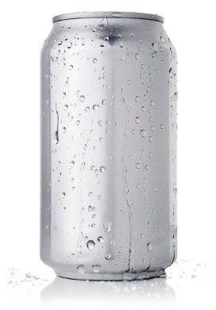

캔 분리수거 안내

캔 can
#음료수캔 #알루미늄 #캔병
재활용: 가능
분류: 캔류
악취: 없음
분리배출 방법
- 내용물을 비우고, 물로 깨끗히 헹궈주세요
- 라벨, 스티커 등이 붙어있을 경우 깨끗하게 떼어낸 후 버려요
- 플라스틱 뚜껑 등 다른 재질은 분리해서 배출해요
유의할 점
- 캔류는 재활용이 가능한 소중한 자원입니다. 재활용을 위해 캔을 잘 분리배출해주세요.
- 캔류의 수거 장소가 종류에 따라 나뉘어져 있으면 캔류 (알미늄) 으로 분리 배출하고, 그렇지 않으면 다른 고철들과 함께 캔류 로 분리 배출해요.